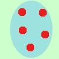
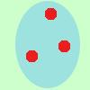
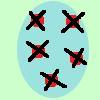
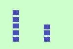
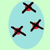
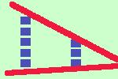

Il simbolo maggiore deriva dalla teoria degli insiemi
Supponiamo di avere due insiemi con oggetti e supponiamo di non
saper contare: come facciamo a sapere quale insieme ha il maggior
numero di oggetti?
|  |
|
 |
| Cancello un oggetto da un insieme e
contemporaneamente faccio
un quadratino finche' non termino gli oggetti, ottengo due colonne |
|  |
 |
 |
Se ora congiungo gli estremi delle colonne
ottengo che le congiungenti si intersecano dove c'e' l'insieme
piu' piccolo
Il piu' piccolo e' sempre verso la punta |
|

|
| ottengo il simbolo maggiore
|
|